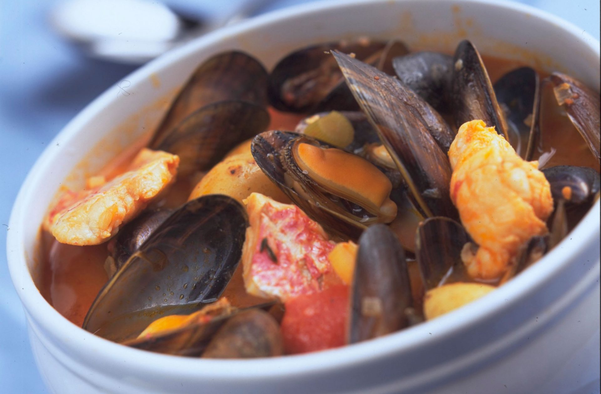

Mediterranean fish stew recipe

Serves:
Prep:
Cooking:
4
20 Min
25 Min
Packed with prawns, mussels and cod, the onion and garlic-laced tomato sauce makes this stew really tasty.
Ingredients
-
2 x 400g cans chopped tomatoes
- 600ml (1pt) vegetable stock
- 1 large red onion, peeled and roughly chopped
- 2 garlic cloves, peeled and crushed
- 550g (1lb 4oz) skinless thick cod fillet
- 250g (9oz) fresh mussels in the shell, scrubbed
- 200g cooked peeled tiger prawns
- 2tbsp chopped fresh parsley
- Toasted French bread to serve (optional)
Method
- Place the tomatoes, 450ml (3/4pt) of the stock, onion, celery, garlic and oregano in a heavy-based pan. Cover and simmer for 20 mins.
- Cut the cod into chunky pieces then add to the pan and season to taste. Cover and simmer for 3-4 mins until tender. Meanwhile, place the mussels and remaining stock in a separate pan. Set over a high heat for 2-3 mins until opened – discard any that don’t open.
- 3 Gently stir the prawns, sugar, mussels and their cooking liquid into the casserole. Heat through then ladle into warmed bowls and sprinkle with the parsley. Serve with toasted French bread, if you like.